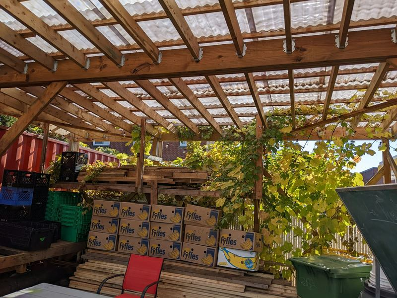

Kolik řeziva na pergolu
Jak spočítat objem řeziva v kubících, ať neobjednáte málo ani zbytečně moc.

Jak počítat kubíky
Objem jednoho kusu je šířka × výška × délka v metrech. Hranol 12 × 12 cm dlouhý 3 m má 0,12 × 0,12 × 3 = 0,0432 m³. Vynásobte počtem kusů a máte objem celé položky.
Na co nezapomenout
- Připočtěte rezervu na prořez, obvykle pár procent.
- Sloupky, vaznice a krokve počítejte zvlášť, každá položka má jiný průřez.
Kalkulačku najdete na úvodní stránce. Výpis nám pošlete a my řekneme cenu.